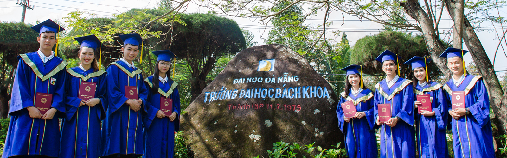

Trang Chủ |
Trang Danh Sách |
Thư |
Trang bảng bị |
Planet
Cuộc sống sinh viên
cuộc đời sinh viên được tìm kiếm qua nhiều năm tháng.
Nhân cũng là một trong số đó, luôn tìm kiếm hương vị thanh xuân bản thân anh đã dần tìm được
bản thân mình trong tuổi trẻ đó. Bược qua tuổi 30 anh đã sống mà không hối tiếc về hành động
của bản thân anh luôn đạt được nhiều kì vọng của người khác. Và lựa chọn đại học một cách thích
hợp để tỏa sáng cũng là một điều tất yếu.
Link đăng ký trường đại học:
website đại học KH
website đại học Bách khoa Đà Nẵng
